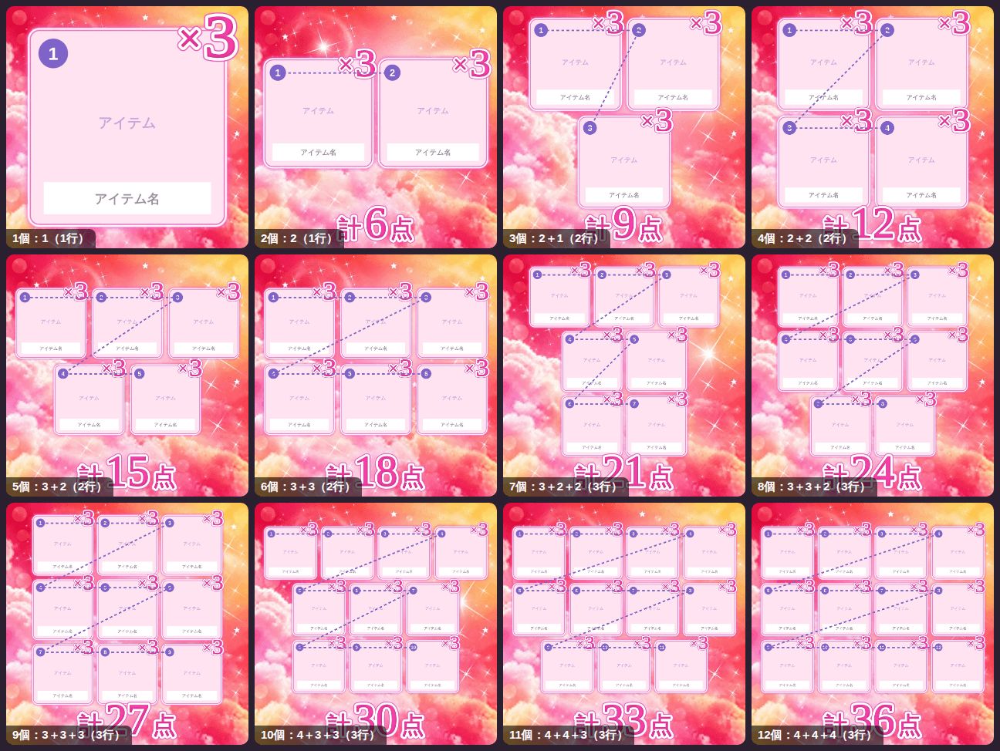

ポケツイ画像加工アプリ
📷 アイテム画像を選ぶ
所持数
−
×
3
＋
⚙ 設定
✕
×数字
×数字を表示する
画像に「所持数」の行を入れる
数字の書体（タップで選択）
文字の書体（「計」「点」など）
×数字の色
自由に指定
「計○点」の色
自由に指定
覚えた名前
「名前を直す」で決めた名前や、文字起こしで直して「もう一度コピー」した名前です。同じ読み取りになったら右の名前に自動で直します（この端末だけ）。
📈 売れ筋ランキング
📖 アイテム名一覧を見る
文字起こしの書式
1. 名前×2（×1は省略）
1. 名前 ×1（全部に数）
・名前×2（×1は省略）
♡ 名前 ×2（×1は省略）
名前×2（記号なし）
題名の×1
×1も付ける
×1は省く
題名の名前の区切り
改行（1行に1つ）
空白（1行にまとめる）
題名に「計○点」を付ける（2個以上のとき）
「題名」「文字」を押したらすぐコピーする
オフにすると、押したときは文字を表示するだけで、確認してから「コピー」を押します。赤い名前（一覧にない名前）があるときは、先に名前を確かめる画面が出ます（閉じたあとは、確認してそのままコピーもできます）。
最初の行（空欄なら入れない）
合計の書き方
最後の行（空欄なら入れない）
{n} が合計の数に置き換わります。変えた書式は次回も使われます。
ショートカット連携（iPhone）
iPhoneの「ショートカット」にスクショの文字を読ませて、このアプリに渡せます。背面タップで起動すれば、スクショを撮って背面を3回たたくだけで名前と所持数が入ります。
📱 ショートカットの作り方
受け取るスクショ：直近
15
30
60
120
分
この時間に撮ったスクショの名前を、画像を選んだときに当てはめます。これより前に撮ったスクショは、名前だけ覚えておき、あとでそのスクショを選ぶと黄色で出します（撮った時刻が分かるときだけ）。ショートカットの「写真を検索」の期間（おすすめ：1時間）と同じにしてください（はじめは60分）。
フチの色
自由に指定
「おすすめ」は背景から浮き上がる同系色のネオンカラー。選んだ色は今の背景セットに保存されます。
全端末で共有（GitHub）
鍵を保存
鍵を消す
鍵を入れた端末では、背景の登録・フチ色の変更・削除が全端末に反映されます（反映まで1〜2分）。鍵はこの端末の中だけに保存されます。
背景セットの管理
複数アイテムの並び順

写真を選んだ順に、左上から番号の順で並びます。並べ方は、画像がいちばん大きくなるように自動で選びます（横に最大4個・できるだけ均等に）。たとえば3個はふつう2＋1、7個は3＋2＋2、8個は3＋3＋2になり、縦長の画像のときは4＋3・4＋4のように行を減らします。下に入れる「計○点」の数字は大きく使います。
切り抜き位置
上端
一辺
スクショの幅を100とした値（正方形）。元画像のピクセルを切り抜いて同じ比率で拡大するだけで、描き直し・補正はしません。
🎁 完成！
✕
画像を長押しして「"写真"に保存」を選んでね
📋 文字起こし
✕
もう一度コピー
✏️ 名前を直す
✕
✓ この名前で決定
上の欄は書き直せます。決めた名前はこの端末が覚えて、次から緑で出ます（一覧にない新しいアイテムでもOK）。
ちがうときは下の候補から選ぶ
🏷 題名
📋 文字
🎁 画像を保存